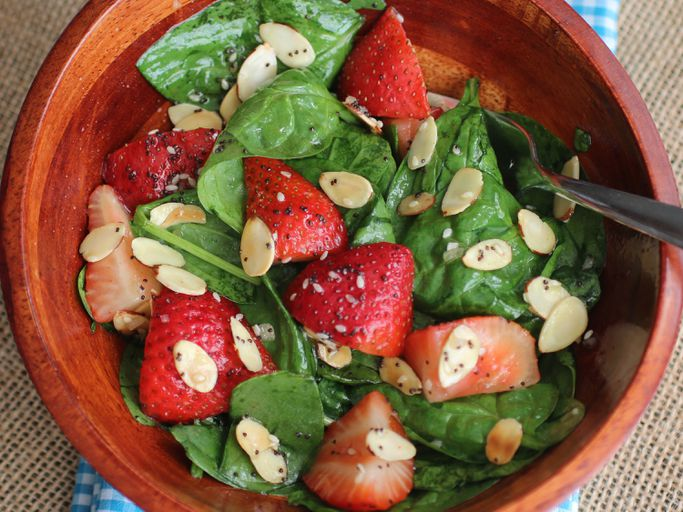

Strawberry Spinach Salad

This popular recipe features a fresh blend of baby spinach and sliced strawberries tossed in a sweet-and-savory cider vinegar dressing. Topped with toasted sesame seeds and poppy seeds, it’s a crowd-pleasing salad known for its simple prep and vibrant flavor contrast.
Dressing:
- ½ cup white sugar
- ½ cup olive oil
- ¼ cup distilled white vinegar
- 2 tablespoons sesame seeds
- 1 tablespoon poppy seeds
- 1 tablespoon minced onion
- ¼ teaspoon paprika
- ¼ teaspoon Worcestershire sauce
Salad:
- 1 quart strawberries - cleaned, hulled and sliced
- 10 ounces fresh spinach - rinsed, dried and torn into bite-sized pieces
- ¼ cup almonds, blanched and slivered
Directions:
- Gather all ingredients.
- To make the dressing: Whisk sugar, oil, vinegar, sesame seeds, poppy seeds, onion, paprika, and Worcestershire sauce together in a medium bowl until well combined. Cover the dressing and chill it in the refrigerator for 1 hour.
- To make the spinach salad: Combine sliced strawberries, torn spinach leaves, and almonds in a large bowl.
- Pour dressing over salad; toss to coat.
- Refrigerate for 10 to 15 minutes before serving.
Home